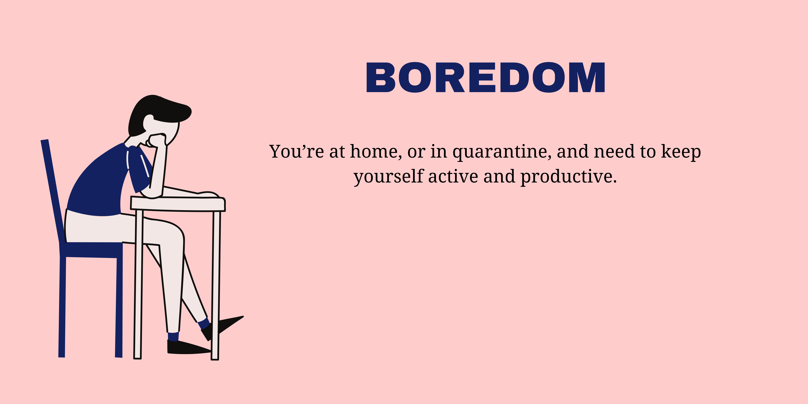

BOREDOM
This free time presents us with opportunities to do things which we’ve always wanted to do or like to do more of depending on our individual circumstances. I think it makes sense for us to be productive with this time and do things that are meaningful to us.
Here are a number of productive activities which you can undertake.
READ THAT BOOK (SERIES) YOU’VE BEEN PUTTING OFF
Books exercise the brain, build our vocabularies, lowers stress and also enhances the imagination. Whether you prefer fiction or non-fiction, buy yourself some books and start reading more this week.
WATCH A DOCUMENTARY SERIES ON NETFLIX
You may choose to watch a documentary series on Netflix which you have never taken an interest in before, which is great.
KEEP A BLOG/JOURNAL
Keeping track of your thoughts, activities and learnings is always a good idea - and a highly productive one at that. You might look back at this time and process your memories or even process your thoughts for the day or the week that has passed.
ENROL ON A FREE COURSE
Enrolling on a course and successfully passing tests and assignments will help build up your knowledge-base as well as your CV. The Open University, for example, offers a wide range of foundation-level courses for anyone to enrol for free and start learning from their catalogue of courses from history and the arts to society, politics and law.
ET UP A WORKOUT ROUTINE
You actually don’t even need such equipment if you follow some of the workout videos available on YouTube.
COMPLETE A DAILY PUZZLE!
Another great way to get the mind working first thing. Like reading books, solving puzzles offer a range of benefits: Improved memory, better problem-solving skills and increased IQ are just some of them. This sort of brain training can take many forms, such as jigsaws, Sudoku puzzles or crosswords which can be found/purchased easily and cheaply.
MEDITATE
It’s important to be mindful of your surroundings as well as your wellbeing whilst in quarantine, and meditation might help you get a bit of peace of mind in times of uncertainty Aura and Headspace both offer help if you are new to meditation and mindfulness.
KEEP IN TOUCH WITH FAMILY, FRIENDS
We’re isolated from the people we usually spend time with but we can be connected with them via more means more than ever before. Make time to catch-up and have a virtual drink with your friends and family. Use the time to speak to relatives that you might not have spoken to in a while - maybe look to find out via those family members about great-great-grandparents who lived through wars as well as pandemics.
CATCH UP ON YOUR SLEEP
Those early mornings and late nights that make up our usual routines sometimes take their toll on us. During this period own increased downtime, be sure to sleep enough. Undertaking some of the activities on this list will help you sleep naturally, but ensure that you are going to bed at a reasonable time